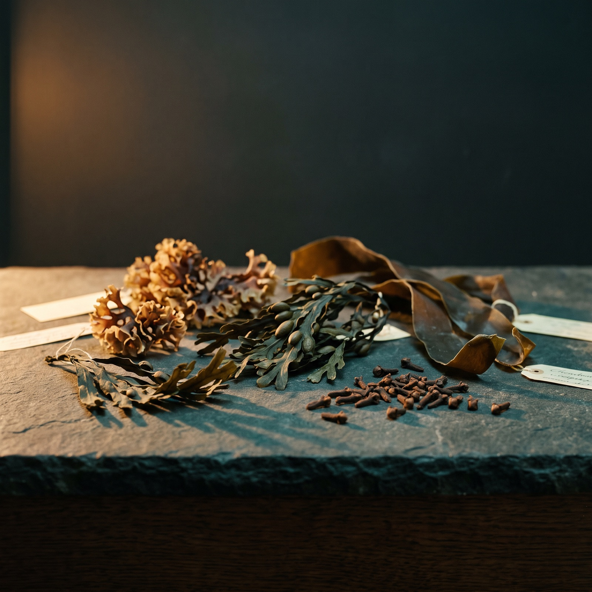

Sea moss
Chondrus crispus, bladderwrack, kelp, chlorella and clove capsules, 50 x 800 mg.
£39.99
Add to bagThis is a demonstration site. Nothing can be bought here yet.
The Northern Soul formula in capsule form: Chondrus crispus, bladderwrack, kelp, chlorella and clove, in 50 vegan capsules of 800 mg. The only sea moss product on this site with a printed iodine figure.
Seaking is the capsule version of the Northern Soul blend, Chondrus crispus, Syzygium aromaticum (clove), Fucus vesiculosus (bladderwrack), Laminariales (kelp) and Chlorella, encapsulated at 800 mg per vegan capsule, 50 to a pack.
Each capsule is measured at 75 µg of iodine, two capsules give 150 µg. Iodine contributes to normal thyroid function and to normal energy-yielding metabolism. 150 µg is the printed adult reference intake, so two capsules a day meets it in full. Do not exceed two capsules a day.
Take two capsules each morning with at least 500 ml of water. At two a day, a pack of 50 runs 25 days.
Specification
Everything on this sheet comes from the pack or the maker. Where a figure is not printed anywhere, it is not here either, and it is on the question list instead.
| Ingredients | Chondrus crispus, Syzygium aromaticum (clove), Fucus vesiculosus (bladderwrack), Laminariales (kelp), Chlorella |
|---|---|
| Form | Vegan capsule, 800 mg |
| Capsules per pack | 50 |
| Dose | Two capsules each morning with at least 500 ml water |
| Supply | 50 capsules at two a day: 25 days |
| Iodine per capsule | 75 µg |
| Iodine per two capsules | 150 µg. Iodine contributes to normal thyroid function and to normal energy-yielding metabolism |
| Printed adult reference intake | 150 µg a day, per the label |
| Printed pregnancy and lactation intake | 220 µg and 290 µg a day, per the label. See queries |
| Maximum dose | Do not exceed two capsules a day |
| Dose | Two capsules each morning with at least 500 ml water. |
| Pack lasts | 50 capsules at two a day: 25 days. |
| Price | £39.99 |
Before you take it
Safety information is the one thing a shop is always allowed to tell you, so we tell you all of it.
If you take prescribed medication, are pregnant or breastfeeding, or are under the care of a doctor for anything at all, speak to them before starting a supplement. This is a food shop and not a medical service.